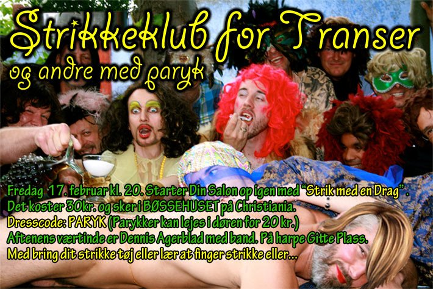

Strikkeklub for Transer og andre med Paryk, Bøssehuset, Christiania, KBH.
|

Med et både varieret og kreativt program kommer "Din Salon" til at sætte ekstra kulør på København i løbet af de kommende måneder. En stribe fredags-arrangementer i Bøssehuset inkluderer alt fra håndværkerfest, bøssekampens sange, påskefest med gul dresscode, drag-koncert med Aupair Outrair, digtoplæsning, melodi grand prix og Rocky Horror Picture Show. Rækken af arrangementer lægger ud med transestrik fredag den 17. februar, og her står døren på vid gab for alle med hang til godt garn og syntetisk hår. Vi har talt med Dennis Agerblad der vil være aftenens værtinde, og fået ham til at løfte lidt af sløret for hvad der mere præcist kommer til at ske på denne åbningsaften, og hvorfor netop et strikkearrangement med parykker blev temaet: »Jeg kunne godt tænke mig at lave et arrangement hvor alle skulle have paryk på. Jeg tænkte bare, at det måske kunne skabe en anderledes stemning. Så var vi alle ens eller fælles om håret. Men hvad skulle vi så lave? Og så fandt jeg på, at vi kunne lave en strikkeklub. Det har min mor på 80 år altid gået til og gør det stadig. Nu vil jeg altså også prøve. Jeg kan godt strikke med pinde men er bedre til at hækle. Jeg håber der kommer nogen som kan strikke som kan lære fra sig. Ellers underviser jeg i fingerstrik. Der vil ikke være show på scenen, da en strikkeklub er fælles hygge. Der vil blive bagt boller og serveret the. Og Gitte Plass spiller på keltisk harpe som baggrundsmusik. Og mens vi sidder der og hygger, så plejer der at være en dame som fortæller en sjov oplevelse hun har haft i løbet af ugen, og så går snakken om det. Man kan også synge hvad man har oplevet. Jeg forsøger i hvert fald at få skrevet en strikkeklub-sang som jeg vil synge nede fra en af sofaerne, helt down to earth med en bolle i hånden. Andre indslag er velkomne. Man behøver ikke være trans, drag eller være i dametøj eller have sminke på, for at være med i strikkeklubben fredag den 17. februar. Det er kun parykken der er et must. Men hvis man har lyst skal man da endelig komme i dametøj eller ingenting. Inde i midten af strikkeklubben har jeg tænke mig at lave et eksperiment som vil ske løbende aftenen igennem«, fortæller Dennis Agerblad til Homotropolis. Det koster 30 kroner at komme ind i strikkevarmen, og arrangementet starter kl. 20.00 den 17. februar i Bøssehuset på Christiania. Og ligger man ikke inde med kunstigt hår, så kan man leje en paryk i døren for 20 kroner. Dette arrangement og alle de kommende arrangementer for "Din Salon" kan du selvfølgelig finde i vores eventkalender, der er Danmarks største af slagsen. |